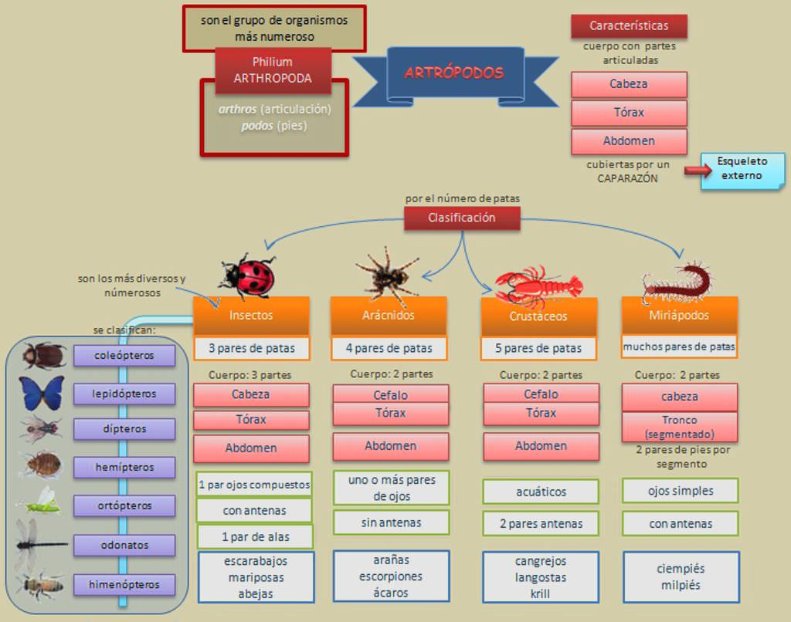
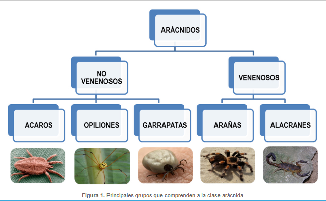
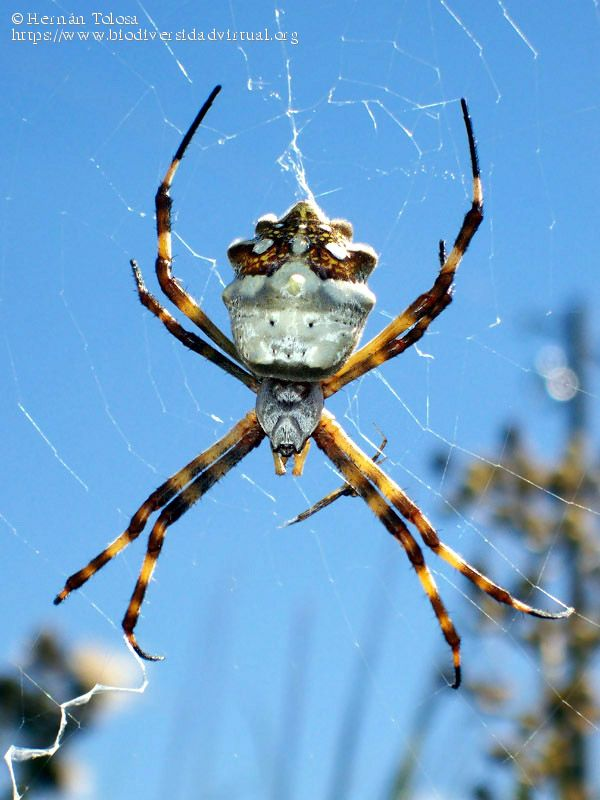

Las arañas no son insectos

Los arácnidos pertenecen al grupo de los Artrópodos,
animales con “apéndices articulados”, que son el grupo más
numeroso del Reino Animal. Los artrópodos se caracterizan por
poseer el cuerpo segmentado cubierto de un exoesqueleto
articulado de quitina que cambian periódicamente a medida que el
animal va creciendo.
El phylum Arthropoda está formado por los grupos: Trilobites,
Mandibulados y Quelicerados. Los Mandibulados (grupo al cual
pertenecen los Crustaceos, Miriapodos y los Insectos) poseen
mandíbulas y antenas, mientras que los Quelicerados carecen de
ambas pero tienen un par de apéndices, los quelíceros, que forman
pinzas o son agudos y semejantes a colmillos y usan para morder a
la presa. Dentro de los quelicerados, los Arácnidos son el grupo
más numeroso. Son casi todos terrestres y de hábitos predadores
por lo que algunos poseen glándulas venenosas. Tienen cuatro
pares de patas locomotoras y un par de apéndices anteriores de
función sensitiva y reproductora, los pedipalpos.
No todos los Aracnidos son venenosos
Dentro del grupo de los aracnidos no todos poseen quéliceros venenosos o aguijones. Existen algunos como los Pseudoescorpiones (con estructura similar pero sin aguijón), los Solífugos o los Opiliones que no presentan estructuras venenosas en su anatomía.
Venenosos ≠ Peligrosos
Que un animal sea venenoso no implica necesariamente que sea peligroso para le humano. En el caso de las arañas, todas poseen veneno, sin embargo no todas son de importancia médica.
Guía de los aracnidos mas comunes
Argiope argentata
Viuda Marrón
Polchus palangiodes

Arañon de monte